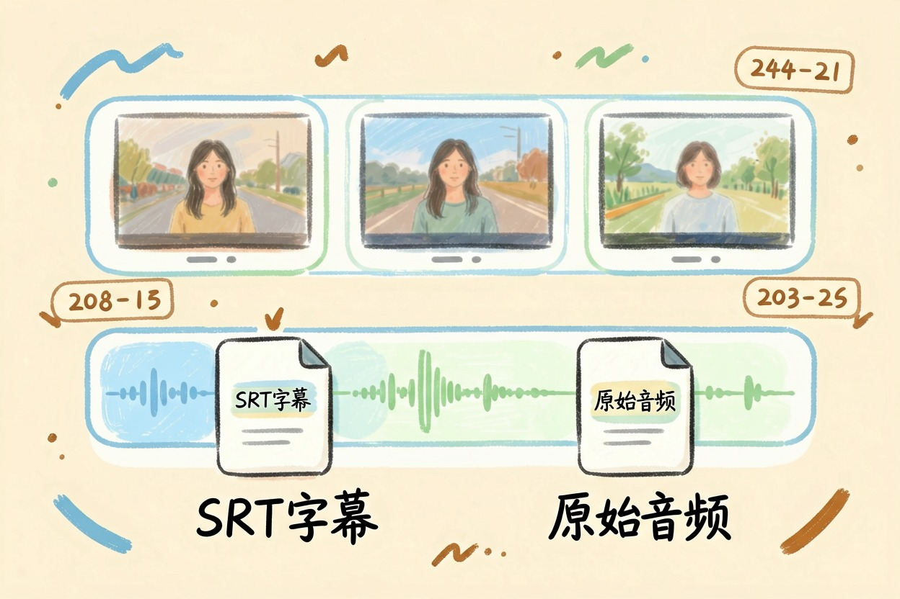
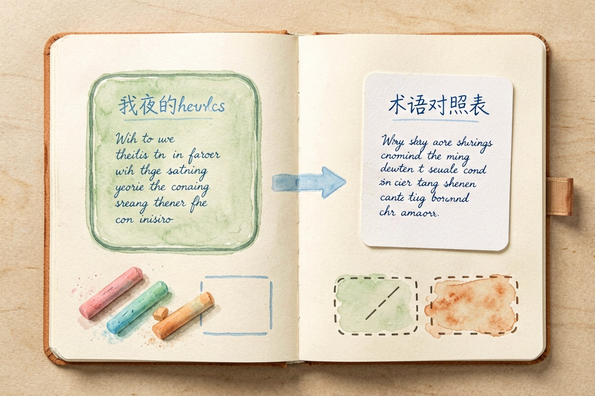
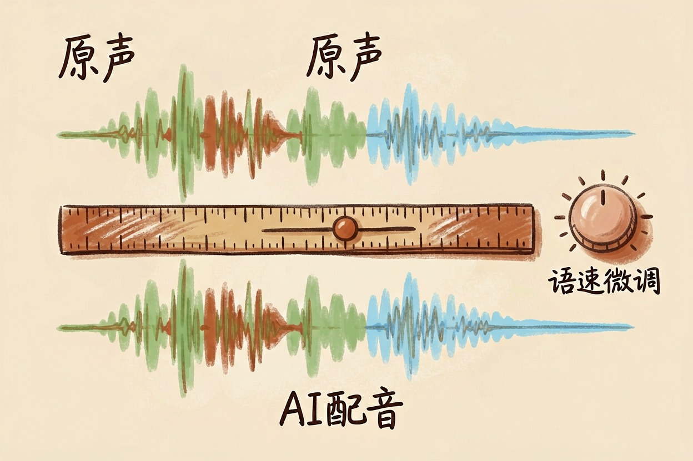
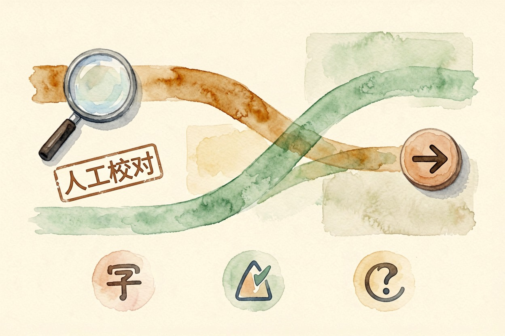
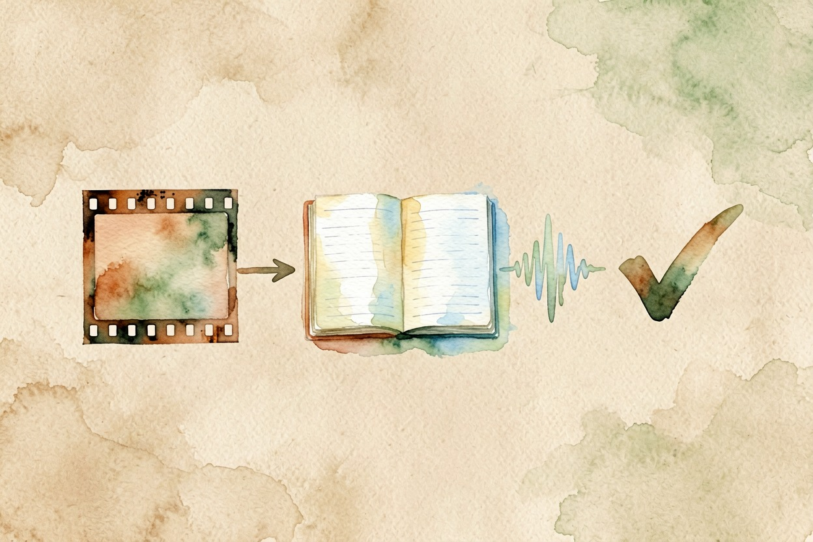

用 AI 翻译视频？字幕加配音的完整做法 — Learntide
跨语言视频不用先学外语。把语音转文字、翻译、再配音，三步就能让片子说另一种语言。
ai翻译视频的两种实现思路

ai翻译视频，核心是两件事：把原话变成文字，再把文字变成另一种语言的声音。字幕和配音一起做，观感才完整。新手最容易卡在第一步，识别不准，后面全歪。
先把目标想清楚。你要硬字幕烧进画面，还是软字幕单独导出？前者适合发短视频，后者方便别人二次翻译。这一步决定工具怎么选。还要想受众：给同事看，还是给海外粉丝看，语气差很多。
语言对也别贪多。先做好一种目标语言，跑通流程再扩。一次翻五种语言，每个都糙，不如一种做精。原片质量决定上限，先拍清楚再谈翻译。
第一步：识别并导出原文字幕

打开剪辑软件，导入视频，用「识别字幕」功能。普通话稳定，方言要校对。识别完导出 SRT，这是后面翻译的原材料。
导出时别只导字幕。原始音频也留一份，后面配音对齐要用。文件命名带上日期和语种，归档不混乱。多人说话的片段，先确认说话人分开，翻译时才不会串。
剪映识别字幕步骤：
1 导入视频到时间线
2 文本 → 识别字幕
3 逐句改错字
4 导出 SRT 与原始音频识别准确率看原片质量。离麦克风近、环境安静，识别就好。远处说话、背景音乐大，错字会多，校对要更狠。先修原片，再修字幕，顺序别反。
第二步：用翻译模型处理字幕

把 SRT 文本喂给翻译模型。一次别塞太多，按段落分批更稳。给模型一段提示词，约束术语和语气：
请把以下视频字幕翻译成英文，保持口语化：
1 人名、品牌名保留原文
2 每行时间轴不变，只译中文部分
3 同一术语全文统一
4 只输出翻译后的字幕，不解释翻译完通读一遍。机翻常把成语译死，遇到就改回大白话。专有名词前后不一致，也要统一。长难句拆成短句，译文念出来才顺。
术语表很有用。把品牌、人名、产品名列成对照表，喂给模型，整片翻译就稳。做系列视频，这张表能一直复用。术语统一，观众才不被晃。
第三步：配音换声与音轨对齐

字幕译好，该换声音了。用配音工具按译文生成语音，选靠近原说话人的音色。语速调慢一点，信息密的段落留白。
音轨对齐是细活。新配音要和画面口型、停顿对上。长句拆短，分段合成，哪段不对重生成哪段。别一次性合成整段，错了难改。情绪重的段落，让配音多一点起伏。
配音工具有两种思路：克隆原声，或用通用音色。克隆更贴，但要授权和样本。通用音色快，风格统一，适合批量。先试听再决定走哪条。
合成导出与避坑提醒
把新配音、新字幕放回时间线，和原画面合成。先导出一小段试看，确认声画同步再导出全片。导出格式选平台常用的，二次压缩少。
ai翻译视频最怕三件事：识别错字、术语乱译、声画错位。每步都留人工校对，成品才站得住。免费额度和功能边界，以官网当前说明为准。涉密内容别传在线工具。想做切片成片，可以看同簇的 ai长视频切片 思路。
最后提醒一句：别把一键生成的成品直接发布，先小范围试看。把流程走顺，ai翻译视频也能做出能看的成品。

本文信息核对于 2026-08-08。AI 产品的价格、免费额度与功能变动频繁，实际以各工具官网当前说明为准。